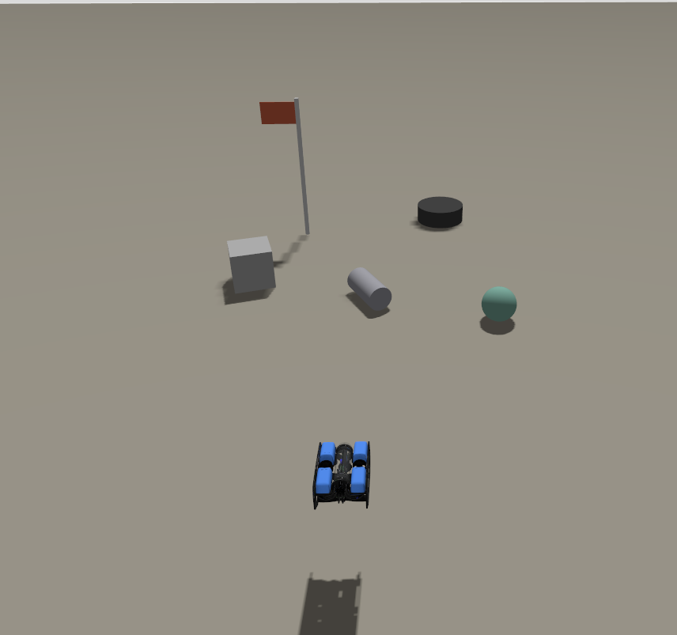
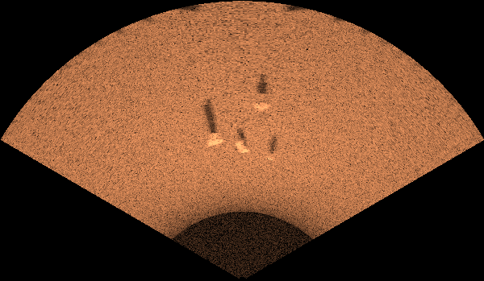
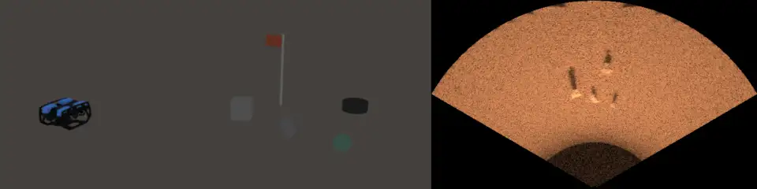

Imaging (forward-looking) sonar from the ROV
A BlueROV2 with a forward imaging sonar (a Sonoptix ECHO) hovers 2.5 m above a sandy seabed, with a glass float, a steel cylinder, a concrete block and a tire ahead of it. This page shows what the sonar sees. The model behind it is in the sonar simulation design.

The scene. (a) From the side: the sonar’s 20° beam, pitched down 15°, meets the seabed from 6.2 m slant range, and the seabed shows faintly from 3.7 m, below the beam’s edge. (b) From above: the 120° fan and the four targets in it; the flag is transparent to the sonar.

The same scene in Gazebo, from a camera behind the ROV.
Run everything inside drydock, from ~/maritime_ws, with the workspace sourced.
Launch
ros2 launch bluerov2_gazebo sim.launch.xml \
world:=$(ros2 pkg prefix --share gz_sonar)/worlds/sonar_imaging.sdf \
config_file:=$(ros2 pkg prefix --share bluerov2_description)/config/bluerov2_sonar.yaml
The world loads the sonar system and names its seabed; the config fits the ECHO looking forward, pitched down 15°, with a 15 m range.
Watch the sonar
ros2 run rqt_image_view rqt_image_view /bluerov2/sonar_forward/image/view
/view is the sonar’s frame drawn as the fan it covers, forward up, for looking at; the sonar data itself is /bluerov2/sonar_forward/image, a marine_acoustic_msgs/ProjectedSonarImage.

The fan, forward up: nothing close in, then the seabed from about 4 m, where the rays first reach it below the vertical beam’s edge, and the four targets as bright returns, each with a shadow behind it. The time-varied gain lifts the near seabed, so the beam’s edge shows little in the image.
Read the sonar in ROS 2
The sonar data is the marine_acoustic_msgs/ProjectedSonarImage on /bluerov2/sonar_forward/image, published by kai_sonar_bridge with a reliable QoS by default (its reliability parameter), so both a reliable subscriber (RViz’s default) and a best-effort one (the sensor-data QoS, which read_sonar.py uses) receive it:
ros2 topic info /bluerov2/sonar_forward/image
ros2 run kai_sonar_bridge read_sonar.py /bluerov2/sonar_forward/image
read_sonar.py, in kai_sonar_bridge/examples, is a short ROS 2 consumer to start from: it unpacks each ping and prints what it holds. The bridge subscribes to the sonar in Gazebo only while a ROS node subscribes to one of its topics, so the sonar starts pinging when read_sonar.py or RViz’s view connects and stops when the last one leaves.
frame bluerov2/sonar_forward_acoustic: 256 beams x 768 samples, 0.21 to 14.99 m, uint8; brightest 255.0 at 6.67 m, 12.0 deg to starboard
The image is stored range-major, all 256 beams at the first range, then the next, as uint8. Each beam’s direction is given in the message’s frame, bluerov2/sonar_forward_acoustic, which puts Z along the sonar’s axis and X up, as ProjectedSonarImage expects, so a beam’s bearing is atan2(−y, z), positive to port. The brightest echo is the glass float’s glint, its near face about 6.7 m away at 13° to starboard. In RViz, a TF display shows that frame on the ROV’s bow.
Turn the ROV
ros2 topic pub /bluerov2/thruster_1/cmd std_msgs/msg/Float64 "data: -0.15" -1 &
ros2 topic pub /bluerov2/thruster_2/cmd std_msgs/msg/Float64 "data: 0.15" -1 &
ros2 topic pub /bluerov2/thruster_3/cmd std_msgs/msg/Float64 "data: 0.15" -1 &
ros2 topic pub /bluerov2/thruster_4/cmd std_msgs/msg/Float64 "data: -0.15" -1 &
A turn to port, so the targets slide across the fan and out of it; publish data: 0.0 to the same four to stop.

The turn from both sides: the ROV in Gazebo on the left, its sonar fan on the right, played at about half speed. As the ROV turns to port, the targets slide to starboard across the fan and out of it.